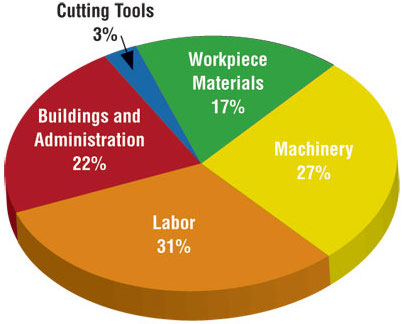
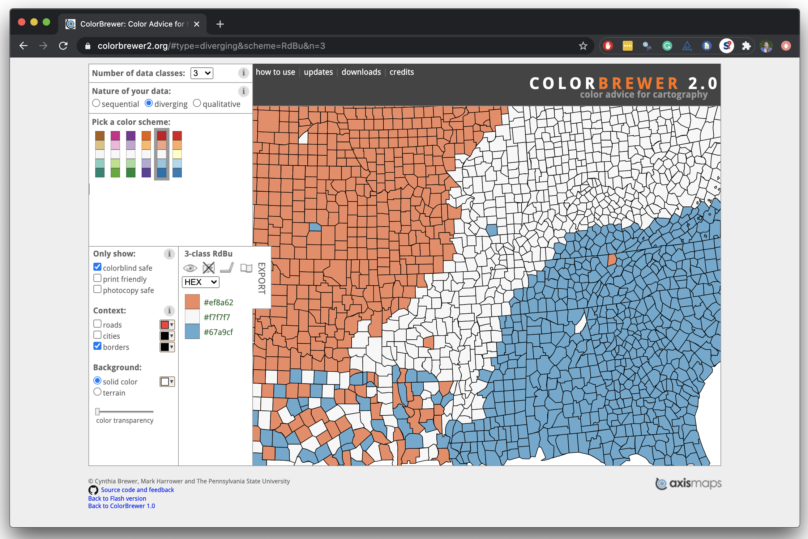

05-viz
Effective Data Visualization
Slides modified from datascienceinabox.org
Q&A
Q: What were those columns in the NC Bike Accident Data we used?
A: Variables are described here
Q: I was confused by wrap vs grid and how should I choose between them.
A: When you want to generate a plot that uses two other variables in the dataset to determine which subset of the data to plot, grid! When you want to use a single variable to facet your data and want to specify how many columns/rows to display, wrap!
Q: When programming in R so far, I often find myself stuck at getting going on a problem and have a different time identifying on where to start. Any tips/advice on how to get past this initial bump in order to start getting through the problem?
A: This is a common struggle! This may sound like an old-person response, but jotting down what you have and what you want (like on actual paper/iPad) can be really helpful. For example, if you have 3 columns and you know you want to have 3 columns at the end, but you want fewer rows, you can draw a picture of this and help yourself realize you need a filter. Of course when there are multiple steps, the drawings become a bit more complex…but also more helpful! The same can be said for data visualization. Drawing out quickly what you want can help you get started.
Q:In what time frame will the lecture survey be available, how many hours after class will the survey be closed
A: It will be open for at least 2h.
Q:For HW1 Q7, I used read_csv and got an error message. I tried read.csv and it worked. Is there any difference between read_csv and read.csv?
A: Hmm…I’d love to take a look to see what error you got. They are similar and often behave the same way. The difference isread.csv()was made before the tidyverse, so it reads your data in as a dataframe.read_csv()is a function that “plays nicely” with the tidyverse and reads the data in as a tibble/data frame. What does that mean practically? It means that typically each one will read the data in and you’ll get the same number of rows and columns. What could differ would be the column names and/or the column types (depending upon the data). All that said,read_csv()is what I’ll recommend in this course…so that’s why I’m curious about the error you got!
Course Announcements
Due Dates:
- Lab 03 due Friday (1/27; 11:59 PM)
- Lecture Participation survey “due” after class
Course Announcements:
- Lab02 Grades (Canvas) & Feedback (GitHub Issue) Posted
- HW02 Now Available
- Discord? - Campuswire post
- “Vote” on posts when grades released (pink: send message; green: announce in class)
Keep it simple


Use color to draw attention


Tell a story

Credit: Angela Zoss and Eric Monson, Duke DVS
Principles for effective visualizations
Principles for effective visualizations
- Order matters
- Put long categories on the y-axis
- Keep scales consistent
- Select meaningful colors
- Use meaningful and nonredundant labels
Data
In September 2019, YouGov survey asked 1,639 GB adults the following question:
In hindsight, do you think Britain was right/wrong to vote to leave EU?
- Right to leave
- Wrong to leave
- Don’t know

Source: YouGov Survey Results, retrieved Oct 7, 2019
The Data: Code
brexit <- tibble(
opinion = c(
rep("Right", 664), rep("Wrong", 787), rep("Don't know", 188)
),
region = c(
rep("london", 63), rep("rest_of_south", 241), rep("midlands_wales", 145), rep("north", 176), rep("scot", 39),
rep("london", 110), rep("rest_of_south", 257), rep("midlands_wales", 152), rep("north", 176), rep("scot", 92),
rep("london", 24), rep("rest_of_south", 49), rep("midlands_wales", 57), rep("north", 48), rep("scot", 10)
)
)Order matters
Alphabetical is rarely ideal

ggplot(brexit, aes(x = opinion)) +
geom_bar()Order by frequency

Clean up labels

Avoiding Alphabetical Order

ggplot(brexit, aes(x = region)) +
geom_bar()Use inherent level order

Clean up labels

Put long categories on the y-axis
Long categories can be hard to read

Move them to the y-axis

And reverse the order of levels

Clean up labels

Pick a purpose
Segmented bar plots can be hard to read

Use facets

Avoid redundancy?

Redundancy can help tell a story

ggplot(brexit, aes(y = opinion, fill = opinion)) +
geom_bar() +
facet_wrap(~region, nrow = 1)Be selective with redundancy

Use informative labels

A bit more info

ggplot(brexit, aes(y = opinion, fill = opinion)) +
geom_bar() +
facet_wrap(~region, nrow = 1) +
guides(fill = "none") +
labs(
title = "Was Britain right/wrong to vote to leave EU?",
subtitle = "YouGov Survey Results, 2-3 September 2019",
caption = "Source: https://d25d2506sfb94s.cloudfront.net/cumulus_uploads/document/x0msmggx08/YouGov%20-%20Brexit%20and%202019%20election.pdf",
x = NULL, y = NULL
)Let’s do better

Fix up facet labels

ggplot(brexit, aes(y = opinion, fill = opinion)) +
geom_bar() +
facet_wrap(~region,
nrow = 1,
labeller = label_wrap_gen(width = 12)
) +
guides(fill = "none") +
labs(
title = "Was Britain right/wrong to vote to leave EU?",
subtitle = "YouGov Survey Results, 2-3 September 2019",
caption = "Source: bit.ly/2lCJZVg",
x = NULL, y = NULL
)Select meaningful colors
Rainbow colors not always best

Manually choose colors when needed

ggplot(brexit, aes(y = opinion, fill = opinion)) +
geom_bar() +
facet_wrap(~region, nrow = 1, labeller = label_wrap_gen(width = 12)) +
guides(fill = "none") +
labs(title = "Was Britain right/wrong to vote to leave EU?",
subtitle = "YouGov Survey Results, 2-3 September 2019",
caption = "Source: bit.ly/2lCJZVg",
x = NULL, y = NULL) +
scale_fill_manual(values = c(
"Wrong" = "red",
"Right" = "green",
"Don't know" = "gray"
)) Choosing better colors

Use better colors

ggplot(brexit, aes(y = opinion, fill = opinion)) +
geom_bar() +
facet_wrap(~region, nrow = 1, labeller = label_wrap_gen(width = 12)) +
guides(fill = "none") +
labs(title = "Was Britain right/wrong to vote to leave EU?",
subtitle = "YouGov Survey Results, 2-3 September 2019",
caption = "Source: bit.ly/2lCJZVg",
x = NULL, y = NULL) +
scale_fill_manual(values = c(
"Wrong" = "#ef8a62",
"Right" = "#67a9cf",
"Don't know" = "gray"
))Select theme

ggplot(brexit, aes(y = opinion, fill = opinion)) +
geom_bar() +
facet_wrap(~region, nrow = 1, labeller = label_wrap_gen(width = 12)) +
guides(fill = "none") +
labs(title = "Was Britain right/wrong to vote to leave EU?",
subtitle = "YouGov Survey Results, 2-3 September 2019",
caption = "Source: bit.ly/2lCJZVg",
x = NULL, y = NULL) +
scale_fill_manual(values = c("Wrong" = "#ef8a62",
"Right" = "#67a9cf",
"Don't know" = "gray")) +
theme_minimal() ggthemes described here
Customize theme

ggplot(brexit, aes(y = opinion, fill = opinion)) +
geom_bar() +
facet_wrap(~region, nrow = 1, labeller = label_wrap_gen(width = 12)) +
guides(fill = "none") +
labs(title = "Was Britain right/wrong to vote to leave EU?",
subtitle = "YouGov Survey Results, 2-3 September 2019",
caption = "Source: bit.ly/2lCJZVg",
x = NULL, y = NULL) +
scale_fill_manual(values = c("Wrong" = "#ef8a62",
"Right" = "#67a9cf",
"Don't know" = "gray")) +
theme_minimal(base_size = 16) +
theme(plot.title.position = "plot",
panel.grid.major.y = element_blank()) Your Turn
- Read in the data (Data slide)
- Think of at least three different ways to tell slightly different stories with these data
- Try to implement at least one of these ideas!
Recap
- Can you determine what needs to be done to improve the effectiveness of your visualizations?
- Can you execute said improvements using
ggplot2? - Can you tell a story with data?
Suggested Reading
- R4DS Chapter 28: Graphics for Communication
- The Glamour of Graphics: [video] [slides] [Prof’s slides inspired by Will’s talk]